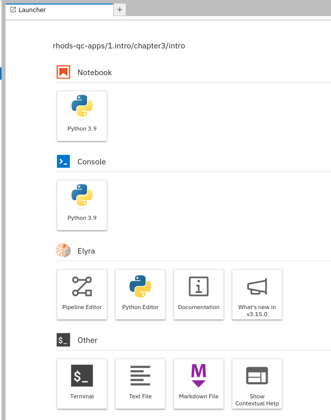
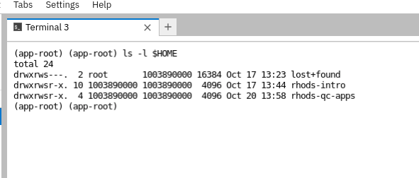

Introduction
A Jupyter notebook is a web-based application that allows users to interactively create live documents that contain narrative text, executable code, and visualizations. Jupyter notebooks have become a popular tool for data scientists who work in data science and machine learning projects.
To fully understand the Jupyter ecosystem, you must understand the following three concepts:
- Notebook file
-
A notebook file, also called as Jupyter notebook, or just notebook, is a file that contains code and multimedia content, including text, images, and audio. This file typically uses the
.ipynbextension.A notebook contains cells. These cells can contain either Markdown or executable code.
- JupyterLab
-
JupyterLab is the execution environment that runs the notebook files. It exposes a web interface for you to visualize, edit and execute the notebooks on a web browser.
The JupyterLab predecessor was called Jupyter Notebook. It also provided a notebook execution environment and a web interface.
Note that the naming of the classic Jupyter Notebook environment can lead to confusion, because the Jupyter notebook term can also refer to a notebook file.
There are many ways to run an execution environment for notebooks. They are as follows :
-
You can install JupyterLab with
pipand run it on your computer. -
You can use the JupyterLab instances included in the RHOAI workspaces.
-
You can use online notebook execution environments, such as Binder, Kaggle, or Google Colab.
-
- Project Jupyter
-
This is the umbrella open source project that defines the notebook file format and develops and maintains the JupyterLab and the Jupyter Notebook environments.
Most of the workbench images that RHOAI provides include JupyterLab.
Jupyter notebooks are popular because they provide an interactive and flexible working environment for experimentation, training, documentation, and analysis. Notebooks integrate with many popular libraries of the data science ecosystem, which enable notebooks to combine rich text with executable code examples, and visualizations.
The versatility of Jupyter notebooks makes them ideal for a wide range of users. For data scientists and researchers, these features enable them to easily analyze data, and to produce reproducible and shareable work and experiments. For educators, Jupyter notebooks are a powerful tool to create hands-on content, which can combine narrative with executable examples.
Cells
A notebook is made of blocks, called cells. Cells can be of two types:
- Markdown cells
-
These cells contain Markdown content and are intended to add rich text to the notebook.
- Code cells
-
These cells contain executable code. JupyterLab includes support for cells that run Python code, but you can add other execution environments. These environments are called as kernels.
The exercise below covers cells in more detail.
Kernels
In the context of JupyterLab (and Jupyter Notebook), a kernel is the process that runs the code cells in a notebook. A kernel determines the language that you can execute in a notebook, which by default is Python.
|
Kernels do not execute markdown cells. |
JupyterLab includes a Python kernel, called ipykernel. This is the default kernel in JupyterLab, and depends on IPython, an interactive Python shell.
If you wish to create notebooks that contain code cells in other languages, you can explore the Kernels List. Many of these kernels are actively maintained by the Jupyter community.
You can interact with kernels without JupyterLab to create your own notebook environments. For example, the Python extension of VSCodium supports Jupyter notebooks without installing JupyterLab. Instead, VSCodium interacts with ipykernel.
Exercise: Exploring Jupyter Notebooks
To continue learning about notebooks, open RHOAI.
-
In a new or an existing data science project, create a
Standard Data Scienceworkbench. -
Open the notebook and clone the https://github.com/RedHatQuickCourses/rhods-qc-apps repository.
-
Open the
1.intro/chapter3/intro/notebooks-intro.ipynbnotebook and follow the instructions.
Exercise: Opening Terminals
You can also open terminals into the workbench container via JupyterLab.
-
Open the workbench from the previous exercise. You can also create a new one.
-
On the Launcher tab, click the Terminal card. If the launcher tab is not open, you can open a new launcher by clicking the + tab.
 -
A new terminal opens:

Demo Video
If you cannot run the previous exercises, you can see the following demo:
Working with Git
You have previously used JupyterLab to clone repositories in your workbench. You can also commit and push your changes to your remote repository.
After you have cloned the repository, the Git tab in JupyterLab displays information about the current repository, including the branch, the current changes and the history.
If you make any changes, the Git card displays them:
You can use the + icon in this area to stage your changes.
You can enter the commit message and the description at the bottom, and click Commit. At this point, JupyterLab might prompt you to enter your name and email.
To push (and pull) changes, use the cloud icons at the top.
At this point, JupyterLab might prompt you to enter your Git credentials. You can select the Save my login temporarily option to cache the credentials in the workbench.

|
You can also work with Git by opening a terminal in JupyterLab and using the |